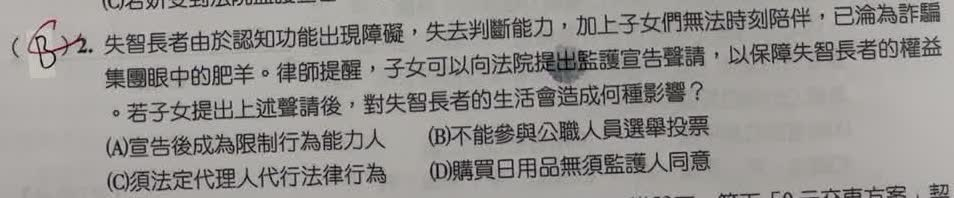

分享原卷｜第 2 題
完整原題
失智長者由於認知功能出現障礙，失去判斷能力，加上子女們無法時刻陪伴，已淪為詐騙集團眼中的肥羊。律師提醒，子女可以向法院提出監護宣告聲請，以保障失智長者的權益。若子女提出上述聲請，對失智長者的生活會造成何種影響？
(A) 宣告後成為限制行為能力人
(B) 不能參與公職人員選舉投票
(C) 須法定代理人代行法律行為
(D) 購買日用品須經監護人同意
先想一想，再查看答案、解說與原圖
原卷作答：B
正確答案：C。依本題聲請獲准、法院作成監護宣告的情境，應由法定代理人代為及代受意思表示。
逐項解析
| 選項與原句 | 判讀 | 句意與判斷理由 |
|---|---|---|
| (A) 宣告後成為限制行為能力人 | 不選 | 依法受監護宣告者為無行為能力人，不是限制行為能力人。 |
| (B) 不能參與公職人員選舉投票 | 不選 | 不能把民事行為能力直接等同選舉權；現行公職人員選舉罷免法第14條已無因受監護宣告而排除選舉權的規定。 |
| (C) 須法定代理人代行法律行為 | 應選 | 依本題聲請獲准、法院作成監護宣告的情境，應由法定代理人代為及代受意思表示。 |
| (D) 購買日用品須經監護人同意 | 不選 | 無行為能力人的法律行為不是僅取得監護人同意，就等同限制行為能力人的同意制度；本題應選由代理人依法代理。 |
詳細說明與解題步驟
一、先說明聲請與宣告的差別
提出聲請本身不會立即改變行為能力，仍須由法院審查是否符合監護宣告要件。本題依選項的情境，是問法院作成監護宣告後的法律效果。
二、監護宣告後屬無行為能力
民法第15條規定受監護宣告者無行為能力；第76條規定無行為能力人由法定代理人代為及代受意思表示。因此本題選C。A把無行為能力與限制行為能力混淆。
三、同意與代理不能混用
限制行為能力人在應經允許的事項，可能由本人作意思表示，再取得法定代理人允許。無行為能力人則是由法定代理人代理，不能只把D的「同意」當作相同程序。
四、選舉權另依選舉法律判斷
現行公職人員選舉罷免法第14條規定年滿20歲的中華民國國民有選舉權，已沒有以受監護宣告為排除條件的文字。民事行為能力與公民投票權利分屬不同制度，不能僅因監護宣告就選B；投票也不能由監護人代投。
核對依據：民法第15、76條；公職人員選舉罷免法第14條。
https://law.moj.gov.tw/LawClass/LawSingle.aspx?pcode=B0000001&flno=76
https://law.moj.gov.tw/LawClass/LawSingle.aspx?pcode=D0020010&flno=14
核對註記：已核對題幹、全部選項與必要材料；教材對應課次未確認，歸綜合。
原圖（僅本題）
